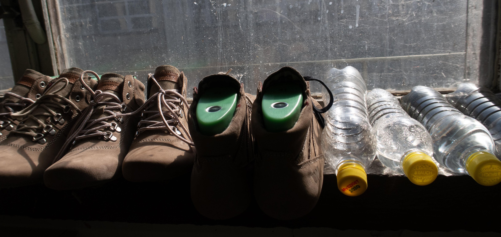

NEDBÁLKOVÁ, Kateřina. ‘I have to like it’: Working-class awareness among workers at a Bata shoe factory. Thesis Eleven. London: SAGE Publication, 2023, roč. 175, č. 1, s. 108-125.
Walach V., Dopita M., Nedbálková K. Nesamozřejmost a nerovnost: východiska nejen pro kriminologii: Rozhovor s Gerlindou Šmausovou. Česká kriminologie. 2022.
NEDBÁLKOVÁ, Kateřina. Hrdinové kapitalistické práce: Etika na papíře a etika v praxi. Fórum sociální politiky. 2024, č. 4, s. 89-92. URL info
NEDBÁLKOVÁ, Kateřina. Sociologie třídy a dělnictví. Sociológia. Bratislava: Slovenská akadémia vied, 2018, roč. 50, č. 1, s. 57-77. ISSN 0049-1225. článek info
NEDBÁLKOVÁ, Kateřina. Idle Ally: LGBT Community in the Czech Republic. In Jusová, I., Šiklová, J. Czech Feminisms: Perspectives on Gender in East Central Europe. Neuveden: Indiana University Press, 2016, s. 205-221. ISBN 978-0-253-02193-9. info
NEDBÁLKOVÁ, Kateřina. Vězení jako domov? In ERA 21, O architektuře víc! 2016. info
NEDBÁLKOVÁ, Kateřina. Když se věda plete s vírou. Rodinné listy. Wolters Kluwer, 2016, roč. 5, č. 11, s. 32-34. ISSN 1805-0824. info
NEDBÁLKOVÁ, Kateřina. Malé velké téma: Veřejné toalety. Biograf. 2016, roč. 2016, 63-64, s. 73-78. ISSN 1211-5770. info
NEDBÁLKOVÁ, Kateřina. On the Research Question. In Nedbálková, K., Sidiropulu Janků, K. DOING RESEARCH, MAKING SCIENCE: THE MEMORY OF ROMA WORKERS. Brno: CDK, 2015, s. 55-74. Sociology series. ISBN 978-80-7325-389-9. info
NEDBÁLKOVÁ, Kateřina. Ethnography, Fieldnotes, and Interviews. In Nedbálková, K., Sidiropulu Janků, K. (eds.). DOING RESEARCH, MAKING SCIENCE: THE MEMORY OF ROMA WORKERS. Brno: CDK, 2015, s. 75-98. Sociology series. ISBN 978-80-7325-389-9. URL info
NEDBÁLKOVÁ, Kateřina. Tak daleko tak blízko: dělnická třída v ČR. Sociální studia. Brno, 2012, roč. 9, č. 3, s. 85-100. ISSN 1214-813X. info
NEDBÁLKOVÁ, Kateřina. Community at the Backstage: Gays and Lesbians in the Czech Republic. In Taylor, Y., Addison, M. Queer Presences and Absences. London: Palgrave Macmillan, 2012, s. 31-50. Queer Presences and Absences. ISBN 0-230-00871-2. info
NEDBÁLKOVÁ, Kateřina. Významné nebo bezvýznamné toalety. Biograf. 2010, roč. 50, č. 1, s. 65-67. ISSN 1211-5770. info
POLÁŠKOVÁ, Eva a Kateřina NEDBÁLKOVÁ. Czech Republic. In The Greenwood Encyclopedia of LGBT Issues Worldwide. USA: Greenwood Press, 2009, s. 101-110. vol 2. ISBN 0-313-34231-8. info
NEDBÁLKOVÁ, Kateřina. Řád veřejných toalet aneb Píšu pro sociologii ne pro svoji zábavu. Biograf - časopis pro biografickou a reflexivní sociologii. Praha, 2009, roč. 49, č. 2, s. 2-21, 19 s. ISSN 1211-5770. info
NEDBÁLKOVÁ, Kateřina. Jedna ruka kreslí druhou aneb Jak se dělá etnografický výzkum. In Kvalitativní výzkum v pedagogických vědách. Pravidla hry. Praha: Portál, 2007, s. 112-125, 13 s. Portál. ISBN 978-80-7367-313-0. info
NEDBÁLKOVÁ, Kateřina. The Changing Space of Gay and Lesbian Community in the Czech Republic. In Beyond The Pink Curtain. Everyday Life of LGBT in Eastern Europe. Ljubljana: Peace Institute, 2007, s. 57-71, 14 s. Politike Symposium series. ISBN 978-961-6455-45-9. info
NEDBÁLKOVÁ, Kateřina. Wahre Lesben, Fake Lesben und die Arbeit an der Beziehung. In Sexuell arbeiten - eine queere Perspektive auf Arbeit und prekäres Leben. Berlin: b_books, 2007, s. 289-299. sexuell arbeiten. ISBN 3-933557-65-8. info
NEDBÁLKOVÁ, Kateřina. The prison of gender: the gender of prison. In Transgressing gender: two is not enough for gender (e)quality. The conference collection. Zagreb: Ženska soba & CESI., 2006, s. 83-98, 15 s. info
NEDBÁLKOVÁ, Kateřina. Etnografický výzkum ve vězení. In Současné metodologické přístupy a strategie pedagogického výzkumu. Plzeň: Západočeská univerzita v Plzni, 2006, s. 1-19. ISBN 80-7043-483-X. info
NEDBÁLKOVÁ, Kateřina. Disciplinace veřejných toalet. Živel. Praha, 2006, roč. 2006, č. 28, s. 36-39. info
NEDBÁLKOVÁ, Kateřina. Rod zatvora: zatvor roda. In Transgresija roda: spolna/rodna ravnopravenost znači više od bizarnosti. Sbornik konferencijskih radova. Zagreb. Zagreb: Ženska soba & CESI, 2005, s. 126-141, 15 s. info
NEDBÁLKOVÁ, Kateřina. Lesbické rodiny: mezi stereotypem a autenticitou. Biograf - časopis pro biografickou a reflexivní sociologii. Praha, 2005, roč. 38, č. 38, s. 31 - 44, 13 s. ISSN 1211-5770. info
NEDBÁLKOVÁ, Kateřina. Gender vězení. In Sféry ženy. Banská Bystrica: Fakulta humanitních vied Univerzity Mateja Bela, SÚAV ČR, 2004, s. 115-122, 7 s. ISBN 80-8055-999-6. info
NEDBÁLKOVÁ, Kateřina. Má vězení střední rod? aneb Maskulinita a femininita ve vězeňských subkulturách. Sociologický časopis. Praha: Sociologický ústav AV R, 2003, roč. 39, č. 4, s. 469-486, 17 s. ISSN 0038-0288. info
NEDBÁLKOVÁ, Kateřina. Vězení jako čas a prostor mužů. ERA 21 ekologie, realizace, architektura. Brno: ERA group, spol. s r.o., 2003, roč. 2003, č. 1, s. 42-43. ISSN 1213-6212. info
NEDBÁLKOVÁ, Kateřina. Proměny veřejného prostoru gay a lesbické subkultury. In SZALÓ, Csaba a Igor NOSÁL. Mozaika v re-konstrukci: Formování sociálních identit v současné Střední Evropě. Brno: Mezinárodní politologický ústav Masarykovy univerzity, 2003, s. 73-90, 17 s. Ediční řada Sborníky, Svazek č. 17. ISBN 80-210-3306-1. info
NEDBÁLKOVÁ, Kateřina. Partnerství ve vzeských subkulturách aneb spoutaná Rozkoš. In Modernizace a česká rodina. Brno: Barrister and Principal, 2003, s. 223-249, 26 s. ISBN 80-86598-61-6. info
NEDBÁLKOVÁ, Kateřina. JIná vězení? Brno: Sedmá generace, 2002, 3 s. 9/5. info
NEDBÁLKOVÁ, Kateřina. Alternativní rodinné modely aneb Rodiny lesbických matek a gay otců. (Kateřina Lišková, Jana Tesařová, ed.). In Ženská práva jsou lidská práva. Sborník přednášek ze semináře. 1. vyd. Brno: NESEHNUTÍ Brno, 2002, s. 96-103. ISBN 80-903228-0-8. info
NEDBÁLKOVÁ, Katerina. Subkultura homosexuál v Brně. Sociologický asopis. Praha: Sociologický ústav AV R, 2000, roč. 36, č. 3, s. 317-332, 15 s. ISSN 0038-0288. info